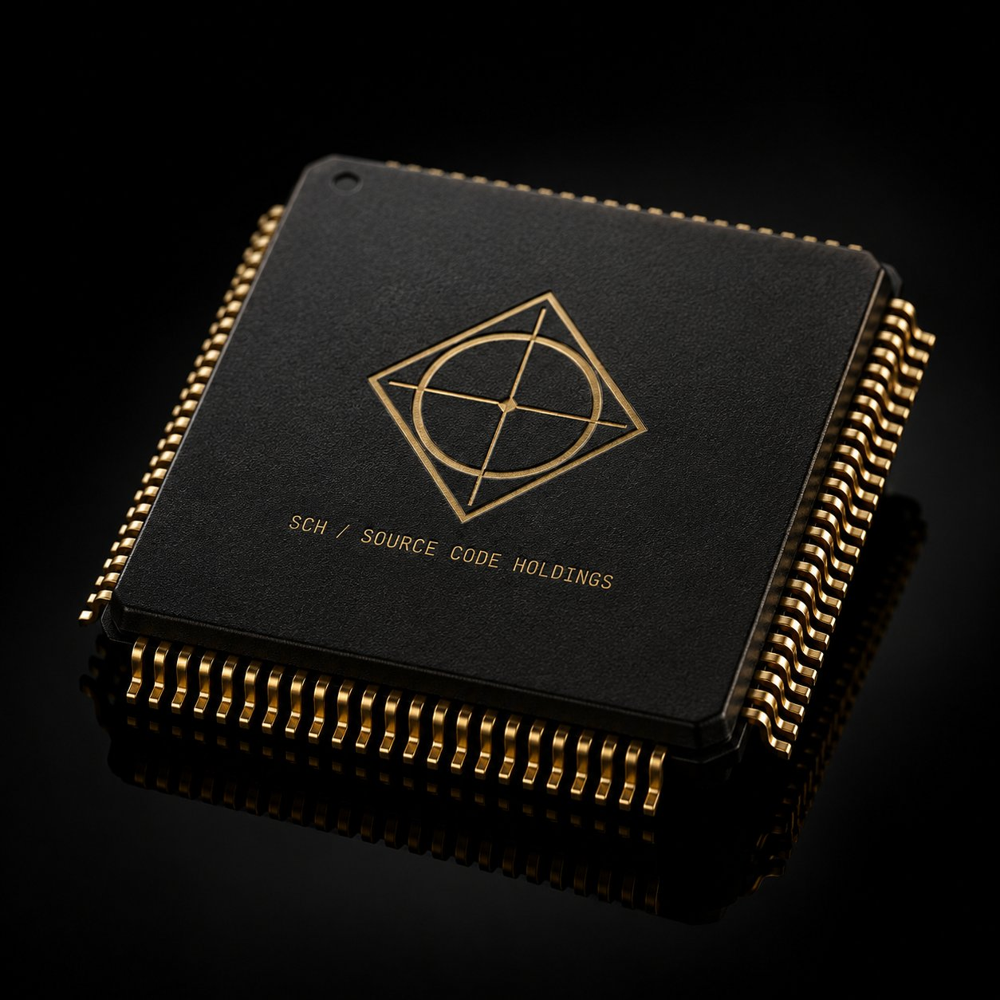
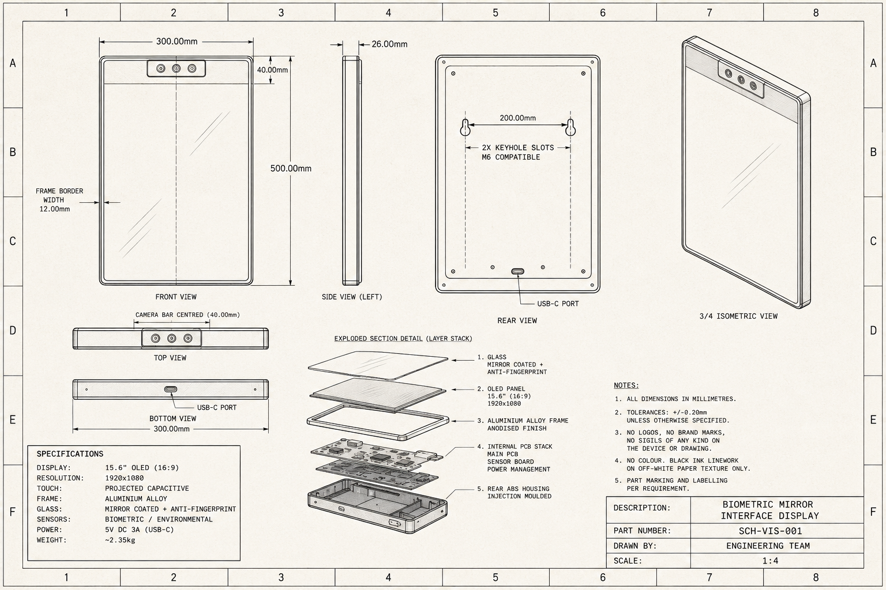
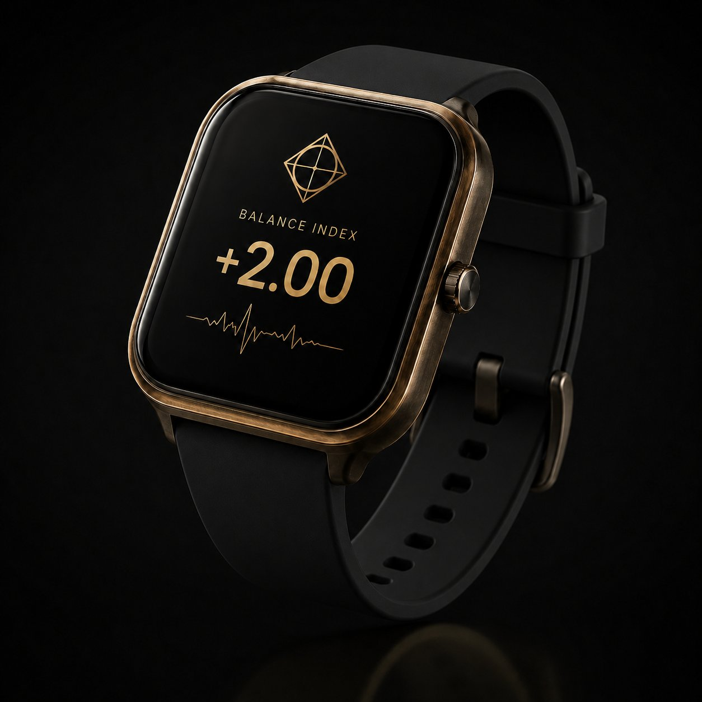
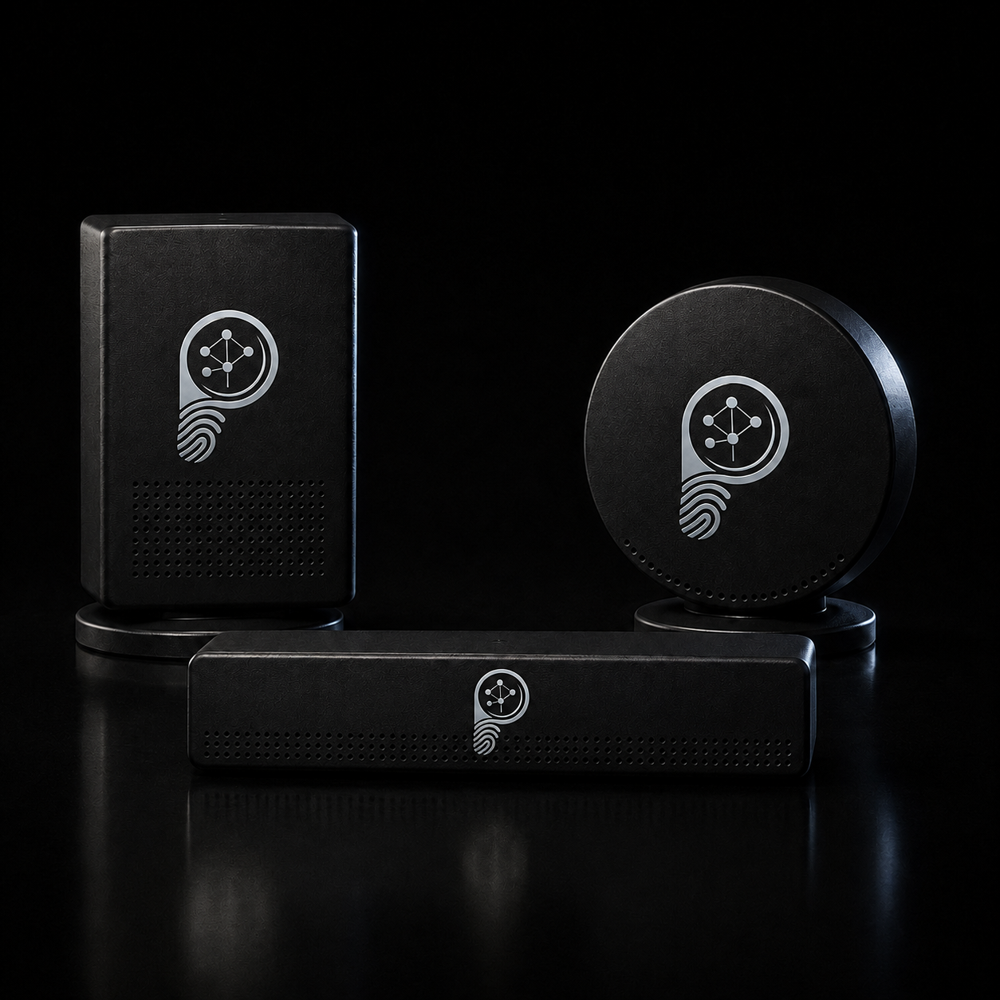
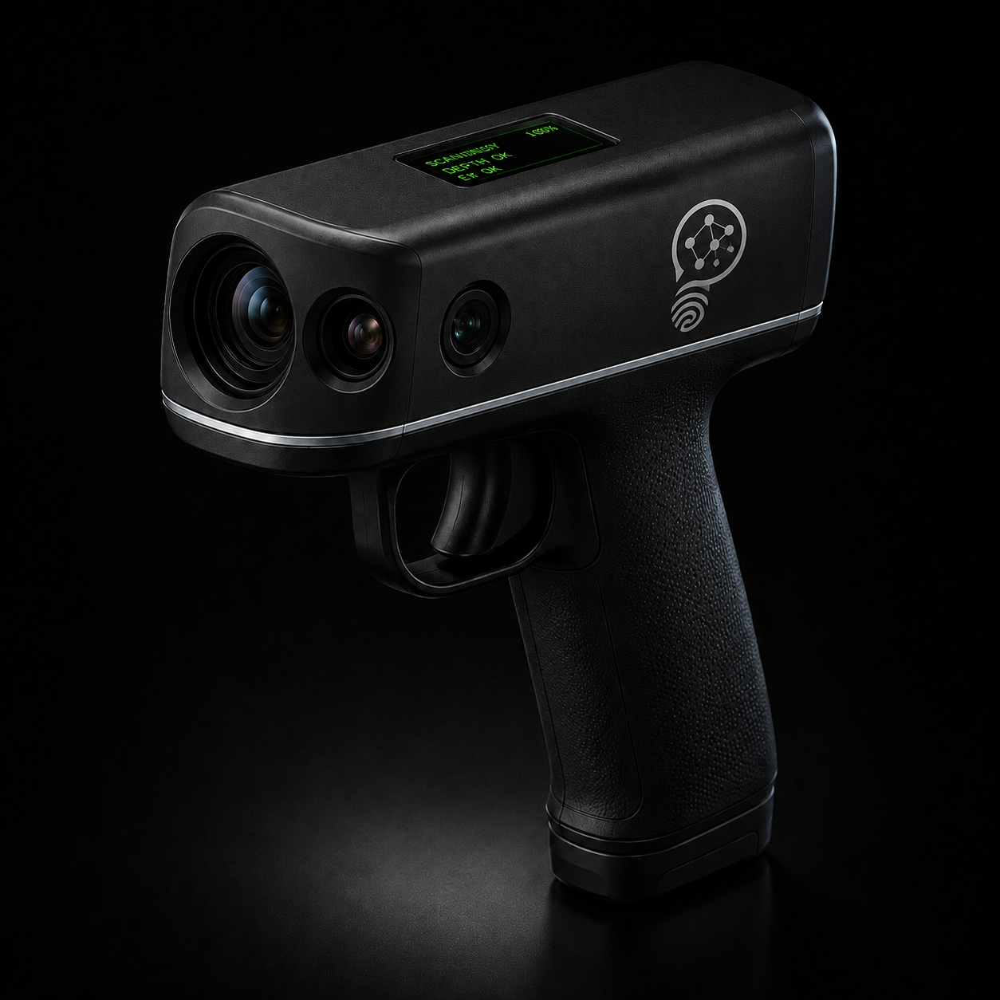

Five hardware prototypes powered by the Awareness Architecture. Each device reads a different layer of behavioural data — together they form the first real-time awareness intelligence system.

The central compute and inference engine of the PsyTectrics™ device ecosystem. Every device — Vision, Pulse, Tone, and Scan — produces raw sensor data. None of them compute a SC Blueprint™ score independently. They offload that computation to the DPC. It receives multi-modal sensor streams, runs the SC Blueprint™ scoring engine in real time, and returns a structured awareness profile to the app and connected display surfaces. Currently deployed as the Omniality Engine — a software implementation. Physical silicon in development.
The ecosystem
Each device captures a different layer of awareness data and feeds it back to the DPC. Together they build a continuous, multi-dimensional awareness profile — individual, relational, and environmental.

A full-length smart mirror that functions simultaneously as a biometric capture surface and a scored awareness profile display. As a mirror it reflects the subject's image with Blueprint™ data overlaid as a transparent HUD. As a sensor, three cameras and an environmental array embedded in the top bar feed biometric signals to the DPC for real-time scoring. The primary practitioner-facing interface in the ecosystem.

The only PsyTectrics™ device designed for continuous passive wear. Pulse provides the subconscious layer data stream — capturing what the body is doing underneath the subject's conscious presentation. PPG derives Heart Rate Variability, EDA measures galvanic skin response driven by the sympathetic nervous system, and the IMU provides postural and movement context. Runs 24/7, building a longitudinal biometric baseline that makes every active session more accurate.

The only PsyTectrics™ device that measures a space rather than an individual. Three ambient room sensor units — rectangular standing, circular disc, and horizontal bar — monitor the acoustic and environmental signature of a space to derive a group-level awareness field reading. No cameras, no individual identification, no biometric profiling. Tone gives the DPC a room-level baseline against which individual Scan and Pulse readings are normalised, and provides a real-time group cohesion indicator for organisational and clinical contexts.

The only directed, actively-aimed device in the ecosystem. A handheld pistol-grip neuro field scanner that a practitioner aims at a subject to produce a rapid SC Blueprint™ snapshot. Three sensing modalities in a single front-facing aperture array: HD micro-expression camera, IR stereo depth, and EVT sensor. The only PsyTectrics™ device that works on an unequipped subject — no worn hardware required. Requires only that the subject is within 2 metres and facing the practitioner.
Full ecosystem
The DPC sits at the centre of the ecosystem — receiving data from Vision, Pulse, Tone, and Scan simultaneously. Every reading feeds the same Awareness Architecture scoring engine and outputs to the PsyTectrics™ app in real time.
Ecosystem diagram · TRL 2 · Full specs under NDA